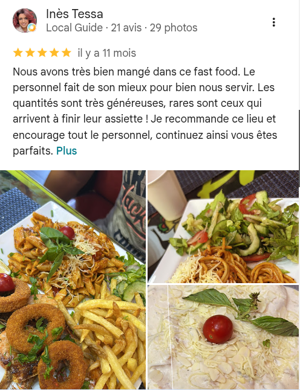

Introduction : Hammamet, Carrefour Gastronomique du Cap Bon
Véritable joyau touristique de la Méditerranée, la ville de Hammamet séduit chaque année des centaines de milliers de visiteurs par ses remparts millénaires, ses vergers d'orangers odorants et ses plages de sable fin. Mais au-delà de son cadre idyllique, Hammamet vibre d'une effervescence culinaire remarquable où la culture de la street food occupe une place prépondérante dans le cœur des habitants et des vacanciers.
Loin d'être une simple solution d'appoint, la restauration rapide en Tunisie est un art de vivre convivial qui fusionne avec brio les traditions culinaires berbères, arabo-andalouses, italiennes et françaises. Que vous soyez en quête d'un déjeuner rapide entre deux baignades ou d'un festin nocturne réconfortant après une soirée à Yasmine Hammamet, ce guide vous invite à découvrir les incontournables de la street food locale et les secrets qui font le succès des meilleures adresses comme Fratello Fast Food.
1. La Richesse Culinaires des Sandwichs et Plats Street Food en Tunisie
La street food tunisienne possède une identité singulière. Contrairement au fast food standardisé occidental, elle met à l'honneur des pains pétris avec passion, des sauces cuisinées maison et une générosité légendaire :
- Le Tacos Français revisité à la Tunisienne : C'est devenu l'un des plats les plus prisés de la jeunesse et des touristes. Dans une galette de blé toastée et pressée, on associe des viandes savoureuses — au premier rang desquelles l'escalope de poulet croustillante —, des frites et surtout une onctueuse sauce fromagère fondante assaisonnée d'une pointe d'harissa douce. Chez Fratello, le Tacos Double Escalope est devenu un symbole de générosité.
- Le Makloub Traditionnel : Véritable institution nationale, le makloub est préparé à partir d'un pâton de pizza frais, garni à cru ou précuit, puis replié en demi-lune avant d'être toasté au four. Sa texture à la fois croustillante et moelleuse en fait une spécialité irrésistible.
- Le Panuozzo au Four : Hérité de la tradition campanienne en Italie et adopté avec ferveur en Tunisie, le panuozzo utilise une pâte à pizza cuite en long pain garni de charcuterie, de fromages fondus et de légumes grillés.
- L'Ojja Royale Tunisienne : Plat mijoté convivial servi sur plaque chaude, l'ojja mêle des œufs pochés dans une sauce tomate parfumée au carvi, à la coriandre et à l'ail, enrichie de merguez artisanales ou de crevettes fraîches du golfe d'Hammamet.
Où Déguster la Meilleure Street Food à Hammamet ?
Pour savourer une cuisine rapide authentique préparée à la commande, éloignez-vous des pièges à touristes trop génériques et privilégiez les axes vivants où se restaurent les locaux. Situé au point stratégique de la Route Nationale 1 à Baraket Sahel, l'établissement Fratello Fast Food combine un four à haute température, une cuisine ouverte transparente et un accueil 7j/7 jusqu'à 02h du matin.
2. Les Critères pour Reconnaître un Fast Food de Qualité Supérieure
Pour profiter pleinement de vos vacances à Hammamet sans compromettre votre santé ni votre plaisir gustatif, voici quatre critères fondamentaux à observer :
- La fraîcheur des volailles et viandes : Évitez les viandes précuites et réchauffées. L'escalope doit être découpée dans du filet frais et panée minute pour préserver son moelleux et ses sucs.
- La qualité de la pâte à pizza : Une bonne pâte ne doit jamais être lourde sur l'estomac. Recherchez une fermentation naturelle d'au moins 24 à 48 heures qui dégrade les amidons complexes et garantit une digestion parfaite.
- La propreté de l'espace de préparation : Une cuisine visible depuis la salle ou le comptoir est le meilleur gage de transparence et d'hygiène irréprochable.
- Les avis clients authentiques : Consultez les retours des résidents réguliers sur Google Maps. Une note supérieure à 4/5 basée sur des centaines d'avis est un indicateur de confiance solide.
3. Conseils Pratiques : Commander et Se Faire Livrer à Hammamet
Pendant la saison estivale ou les week-ends d'affluence, les déplacements entre Hammamet Nord, le centre-ville et les stations balnéaires de Yasmine Hammamet peuvent s'avérer encombrés. Opter pour la livraison directe à votre résidence de vacances ou à la réception de votre hôtel est souvent l'option la plus relaxante.
Grâce à son standard téléphonique au +216 23 445 536 et à sa messagerie express WhatsApp, Fratello Fast Food permet de choisir facilement vos suppléments, sauces et boissons sur sa carte officielle (menu.fratellofast.food) pour un acheminement rapide et chaud directement à votre table.